R基础知识（二）
Boylad · 2018-12-03
基础操作
#把1,2,...,100这个整数向量赋值到X
X <- 1:100
#同上，只不过显示出来
(X <- 1:100)
## [1] 1 2 3 4 5 6 7 8 9 10 11 12 13 14 15 16 17 18
## [19] 19 20 21 22 23 24 25 26 27 28 29 30 31 32 33 34 35 36
## [37] 37 38 39 40 41 42 43 44 45 46 47 48 49 50 51 52 53 54
## [55] 55 56 57 58 59 60 61 62 63 64 65 66 67 68 69 70 71 72
## [73] 73 74 75 76 77 78 79 80 81 82 83 84 85 86 87 88 89 90
## [91] 91 92 93 94 95 96 97 98 99 100
#从把1,2,...,100中随机不放回地抽取20个值作为样本
sample(X, 20)
## [1] 33 67 45 85 65 14 2 99 24 97 46 68 52 61 25 76 87 10 39 64
#先设置随机种子再抽样
set.seed(0)
sample(1:10, 3)
## [1] 9 4 7
#从1,2,...,2000000中随机不放回地抽取10000个值作为样本
Z <- sample(1:200000, 10000)
#方括号中为向量Z的下标
Z[1:10]
## [1] 13218 61911 172302 79035 176097 50453 112566 90442 192329 173781
#以y为下标的Z的元素值
y <- c(1, 3, 7, 3, 4, 2)
Z[y]
## [1] 13218 172302 112566 172302 79035 61911
#从X有放回地随机抽取100个值作为样本
(Z <- sample(X, 100, rep = T))
## [1] 38 18 60 40 6 49 47 38 71 21 13 95 95 39 78 27 97 15 80 63 53 68 17 78 54
## [26] 93 81 16 8 69 60 16 64 40 5 58 32 65 91 93 99 66 63 7 36 12 79 94 78 80
## [51] 31 81 48 32 25 12 8 19 26 48 58 57 82 66 26 74 54 27 16 93 49 29 2 20 11
## [76] 75 38 99 30 42 80 92 41 19 57 27 72 30 48 86 5 44 74 16 99 14 56 82 70 31
#无重复地显示Z中的元素(显示Z中不同元素)
(Z1 <- unique(Z))
## [1] 38 18 60 40 6 49 47 71 21 13 95 39 78 27 97 15 80 63 53 68 17 54 93 81 16
## [26] 8 69 64 5 58 32 65 91 99 66 7 36 12 79 94 31 48 25 19 26 57 82 74 29 2
## [51] 20 11 75 30 42 92 41 72 86 44 14 56 70
#Z中不同元素的个数
length(Z1)
## [1] 63
#X个Z之间的不同元素——集合差
XZ <- setdiff(X, Z)
#对XZ及Z的并集的元素从小到大排序
sort(union(XZ, Z))
## [1] 1 2 3 4 5 6 7 8 9 10 11 12 13 14 15 16 17 18
## [19] 19 20 21 22 23 24 25 26 27 28 29 30 31 32 33 34 35 36
## [37] 37 38 39 40 41 42 43 44 45 46 47 48 49 50 51 52 53 54
## [55] 55 56 57 58 59 60 61 62 63 64 65 66 67 68 69 70 71 72
## [73] 73 74 75 76 77 78 79 80 81 82 83 84 85 86 87 88 89 90
## [91] 91 92 93 94 95 96 97 98 99 100
#XZ及Z的并的元素与X是否一样
setequal(union(XZ, X), X)
## [1] TRUE
#两个数据的交
intersect(1:10, 7:50)
## [1] 7 8 9 10
#从1:100中不等概率随机抽样(各数字被抽到的概率与其值大小成比例)
sample(1:100, 20, prob = 1:100)
## [1] 97 86 51 77 58 47 25 85 18 82 53 88 60 52 95 89 81 30 92 21一些简单运算
#pi是圆周率
pi*10^2
## [1] 314.1593
#可以对向量求指数幂
pi*(1:10)^-2.3
## [1] 3.14159265 0.63794154 0.25105622 0.12954239 0.07753876 0.05098025
## [7] 0.03576221 0.02630528 0.02006283 0.01574526
#和上面一样
X = pi * 10^2
X
## [1] 314.1593
print(X)
## [1] 314.1593
#赋值带打印
(X <- pi * 10^2)
## [1] 314.1593
#指数也可以是向量
pi^(1:5)
## [1] 3.141593 9.869604 31.006277 97.409091 306.019685
#输出X的12位数字
print(X, digits = 12)
## [1] 314.159265359关于R对象的类型
X <- pi * 10^2
class(X) #X的class
## [1] "numeric"
typeof(X) #X的type
## [1] "double"
class(cars) #cars是一个R中自带的数据
## [1] "data.frame"
typeof(cars) #cars的type
## [1] "list"
names(cars) #cars数据的变量名字
## [1] "speed" "dist"
summary(cars) #cars的汇总
## speed dist
## Min. : 4.0 Min. : 2.00
## 1st Qu.:12.0 1st Qu.: 26.00
## Median :15.0 Median : 36.00
## Mean :15.4 Mean : 42.98
## 3rd Qu.:19.0 3rd Qu.: 56.00
## Max. :25.0 Max. :120.00
head(cars) #cars的头几行数据，和cars[1:6,]相同
## speed dist
## 1 4 2
## 2 4 10
## 3 7 4
## 4 7 22
## 5 8 16
## 6 9 10
tail(cars) #cars的最后几行数据
## speed dist
## 45 23 54
## 46 24 70
## 47 24 92
## 48 24 93
## 49 24 120
## 50 25 85
str(cars) #也是汇总
## 'data.frame': 50 obs. of 2 variables:
## $ speed: num 4 4 7 7 8 9 10 10 10 11 ...
## $ dist : num 2 10 4 22 16 10 18 26 34 17 ...
row.names(cars) #行名字
## [1] "1" "2" "3" "4" "5" "6" "7" "8" "9" "10" "11" "12" "13" "14" "15"
## [16] "16" "17" "18" "19" "20" "21" "22" "23" "24" "25" "26" "27" "28" "29" "30"
## [31] "31" "32" "33" "34" "35" "36" "37" "38" "39" "40" "41" "42" "43" "44" "45"
## [46] "46" "47" "48" "49" "50"
attributes(cars) #cars的一些信息
## $names
## [1] "speed" "dist"
##
## $class
## [1] "data.frame"
##
## $row.names
## [1] 1 2 3 4 5 6 7 8 9 10 11 12 13 14 15 16 17 18 19 20 21 22 23 24 25
## [26] 26 27 28 29 30 31 32 33 34 35 36 37 38 39 40 41 42 43 44 45 46 47 48 49 50
class(dist ~ speed) #公式形式，"~"左边是因变量，右边是自变量
## [1] "formula"
plot(dist~speed, cars) #两个变量的散点图
plot(cars$speed, cars$dist) #同上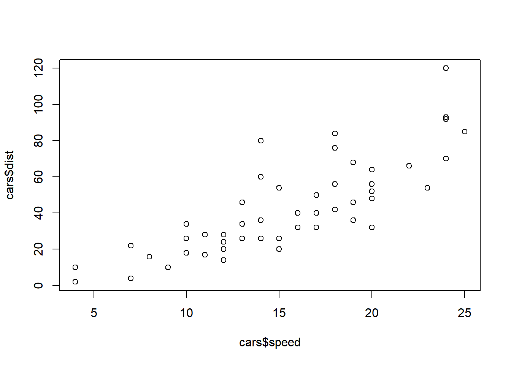
简单自变量为定量变量及定性变量的回归
#cars的行列数
ncol(cars)
## [1] 2
nrow(cars)
## [1] 50
#以dist为因变量，speed为自变量做OLS
lm(dist ~ speed, data = cars)
##
## Call:
## lm(formula = dist ~ speed, data = cars)
##
## Coefficients:
## (Intercept) speed
## -17.579 3.932
#增加定性变量qspeed,四分位点为分割点
cars$qspeed <- cut(cars$speed, breaks = quantile(cars$speed),
include.lowest = TRUE)
names(cars) #数据cars多了一个变量
## [1] "speed" "dist" "qspeed"
head(cars[3]) #第三个变量前6行的值，和cars[,3]类似
## qspeed
## 1 [4,12]
## 2 [4,12]
## 3 [4,12]
## 4 [4,12]
## 5 [4,12]
## 6 [4,12]
table(cars[3]) #列表
##
## [4,12] (12,15] (15,19] (19,25]
## 15 11 12 12
is.factor(cars$qspeed) #是否为列表
## [1] TRUE
plot(dist ~ qspeed, data = cars) #箱线图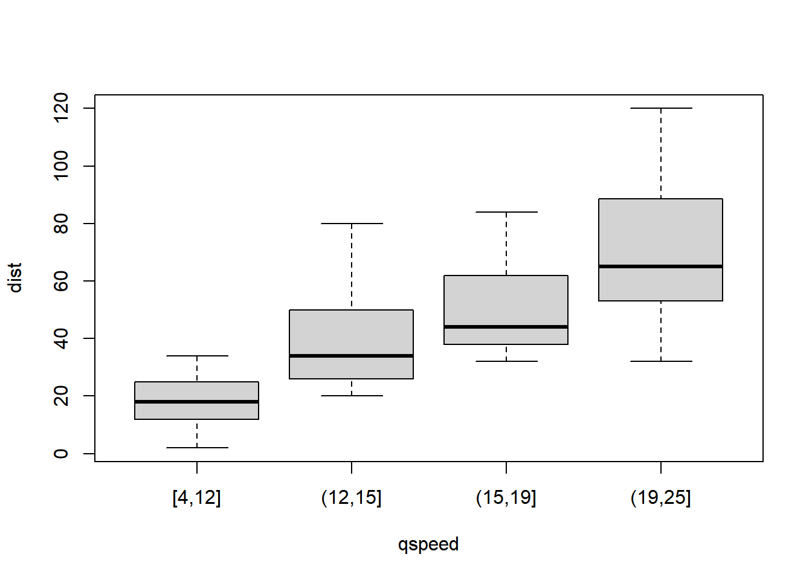
#拟合线性模型(简单最小二乘回归)：
(a <- lm(dist ~ qspeed, data = cars))
##
## Call:
## lm(formula = dist ~ qspeed, data = cars)
##
## Coefficients:
## (Intercept) qspeed(12,15] qspeed(15,19] qspeed(19,25]
## 18.20 21.98 31.97 51.13
#回归结果(包括一些检验)
summary(a)
##
## Call:
## lm(formula = dist ~ qspeed, data = cars)
##
## Residuals:
## Min 1Q Median 3Q Max
## -37.33 -13.96 -3.75 9.30 50.67
##
## Coefficients:
## Estimate Std. Error t value Pr(>|t|)
## (Intercept) 18.200 4.551 3.999 0.000228 ***
## qspeed(12,15] 21.982 6.996 3.142 0.002933 **
## qspeed(15,19] 31.967 6.826 4.683 2.52e-05 ***
## qspeed(19,25] 51.133 6.826 7.491 1.68e-09 ***
## ---
## Signif. codes: 0 '***' 0.001 '**' 0.01 '*' 0.05 '.' 0.1 ' ' 1
##
## Residual standard error: 17.62 on 46 degrees of freedom
## Multiple R-squared: 0.5609, Adjusted R-squared: 0.5322
## F-statistic: 19.59 on 3 and 46 DF, p-value: 2.517e-08简单样本描述统计量
X <- round(runif(20, 0, 20), digits = 2) #四舍五入
summary(X) #汇总
## Min. 1st Qu. Median Mean 3rd Qu. Max.
## 0.370 4.730 8.905 9.379 13.760 18.890
#极值，与range(X)类似
min(X)
## [1] 0.37
max(X)
## [1] 18.89
median(X) #中位数(median)
## [1] 8.905
mean(X) #均值(mean)
## [1] 9.379
var(X) #方差(variance)
## [1] 34.54842
sd(X) #标准差(standard deviation)
## [1] 5.87779
sqrt(X) #平方根
## [1] 3.4756294 3.4597688 2.1771541 3.6221541 1.8110770 1.2529964 2.9274562
## [8] 3.8871583 0.6082763 2.7037012 3.0397368 2.3979158 1.2288206 4.3462628
## [15] 3.6482873 4.0792156 4.3150898 3.9025633 2.3600847 2.1679483
rank(X) #秩(rank)
## [1] 13 12 6 14 4 3 10 16 1 9 11 8 2 20 15 18 19 17 7 5
order(X) #升幂排列的X的下标
## [1] 9 13 6 5 20 3 19 12 10 7 11 2 1 4 15 8 18 16 17 14
order(X, decreasing = TRUE) #降幂排列的X的下标
## [1] 14 17 16 18 8 15 4 1 2 11 7 10 12 19 3 20 5 6 13 9
X[order(X)] #和sort(X)相同
## [1] 0.37 1.51 1.57 3.28 4.70 4.74 5.57 5.75 7.31 8.57 9.24 11.97
## [13] 12.08 13.12 13.31 15.11 15.23 16.64 18.62 18.89
sort(X) #同上：升幂排列的X
## [1] 0.37 1.51 1.57 3.28 4.70 4.74 5.57 5.75 7.31 8.57 9.24 11.97
## [13] 12.08 13.12 13.31 15.11 15.23 16.64 18.62 18.89
sort(X, decreasing = TRUE) #sort(X, dec = TRUE) 降幂排列的X
## [1] 18.89 18.62 16.64 15.23 15.11 13.31 13.12 12.08 11.97 9.24 8.57 7.31
## [13] 5.75 5.57 4.74 4.70 3.28 1.57 1.51 0.37
sum(X) #元素和
## [1] 187.58
length(X) #向量元素个数
## [1] 20
round(X) #四舍五入，等于round(X, 0),而round(X, 5)保留到小数点后5位
## [1] 12 12 5 13 3 2 9 15 0 7 9 6 2 19 13 17 19 15 6 5
fivenum(X) #五数汇总，quantile，等同于summary(X)
## [1] 0.370 4.720 8.905 14.210 18.890
quantile(X) #分为点 quantile(different convention)有多种定义
## 0% 25% 50% 75% 100%
## 0.370 4.730 8.905 13.760 18.890
quantile(X, c(0, .33, .66, 1))
## 0% 33% 66% 100%
## 0.3700 5.6186 12.6416 18.8900
mad(X) #"median average diatance"
## [1] 6.390006
cummax(X) #累积最大值
## [1] 12.08 12.08 12.08 13.12 13.12 13.12 13.12 15.11 15.11 15.11 15.11 15.11
## [13] 15.11 18.89 18.89 18.89 18.89 18.89 18.89 18.89
cummin(X) #累积最小值
## [1] 12.08 11.97 4.74 4.74 3.28 1.57 1.57 1.57 0.37 0.37 0.37 0.37
## [13] 0.37 0.37 0.37 0.37 0.37 0.37 0.37 0.37
cumprod(X) #累积积
## [1] 1.208000e+01 1.445976e+02 6.853926e+02 8.992351e+03 2.949491e+04
## [6] 4.630701e+04 3.968511e+05 5.996420e+06 2.218675e+06 1.621852e+07
## [11] 1.498591e+08 8.616898e+08 1.301152e+09 2.457875e+10 3.271432e+11
## [16] 5.443663e+12 1.013610e+14 1.543728e+15 8.598566e+15 4.041326e+16
cor(X, sin(X/20)) #线性相关系数(correlation)
## [1] 0.9977729简单图形
X <- rnorm(200)
hist(X, col = "lightblue") #直方图
rug(X) #在直方图下面加上是实际点的大小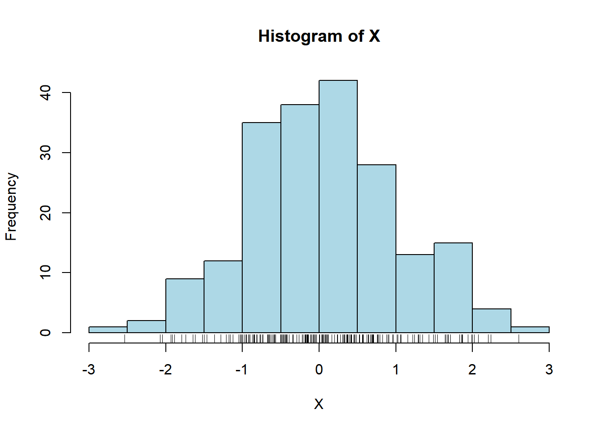
stem(X) #茎叶图
##
## The decimal point is at the |
##
## -2 | 5
## -2 | 10
## -1 | 99987665555
## -1 | 4322210000000
## -0 | 9999998888888777777777666666666555555
## -0 | 444444333322222222221111111111000
## 0 | 00000111111111111122223333334444444444
## 0 | 55555566666677777778888888999
## 1 | 000001122233334
## 1 | 55567777889999
## 2 | 000122
## 2 | 6
X <- rnorm(500)
Y <- X + rnorm(500) #构造一个线性关系
plot(Y ~ X) #散点图
a <- lm(Y ~ X) #做回归
abline(a, col = "red") #或者abline(lm(Y ~Ｘ), col = "red")散点图加拟合线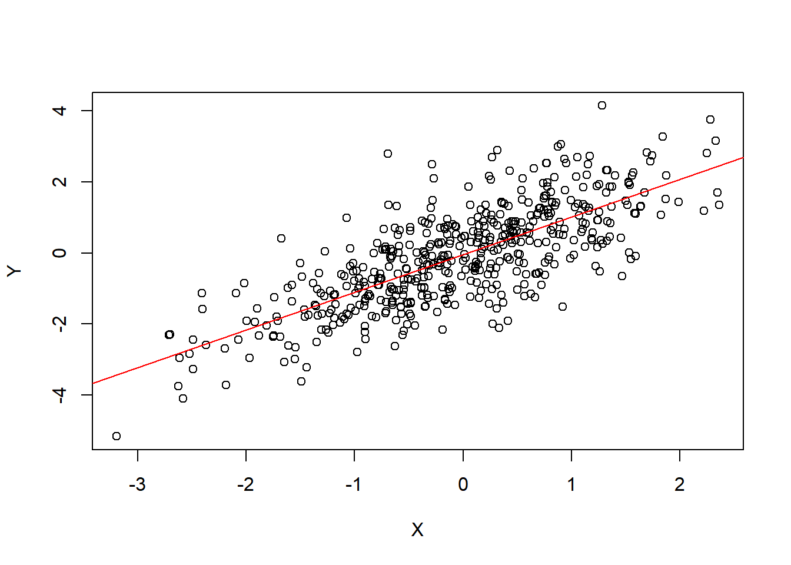
print("Hello World!")
## [1] "Hello World!"
paste("X 的最小值=", min(X)) #打印
## [1] "X 的最小值= -3.19493429349719"
demo(graphics) #演示画图(点击Enter来切换)
##
##
## demo(graphics)
## ---- ~~~~~~~~
##
## > # Copyright (C) 1997-2009 The R Core Team
## >
## > require(datasets)
##
## > require(grDevices); require(graphics)
##
## > ## Here is some code which illustrates some of the differences between
## > ## R and S graphics capabilities. Note that colors are generally specified
## > ## by a character string name (taken from the X11 rgb.txt file) and that line
## > ## textures are given similarly. The parameter "bg" sets the background
## > ## parameter for the plot and there is also an "fg" parameter which sets
## > ## the foreground color.
## >
## >
## > x <- stats::rnorm(50)
##
## > opar <- par(bg = "white")
##
## > plot(x, ann = FALSE, type = "n")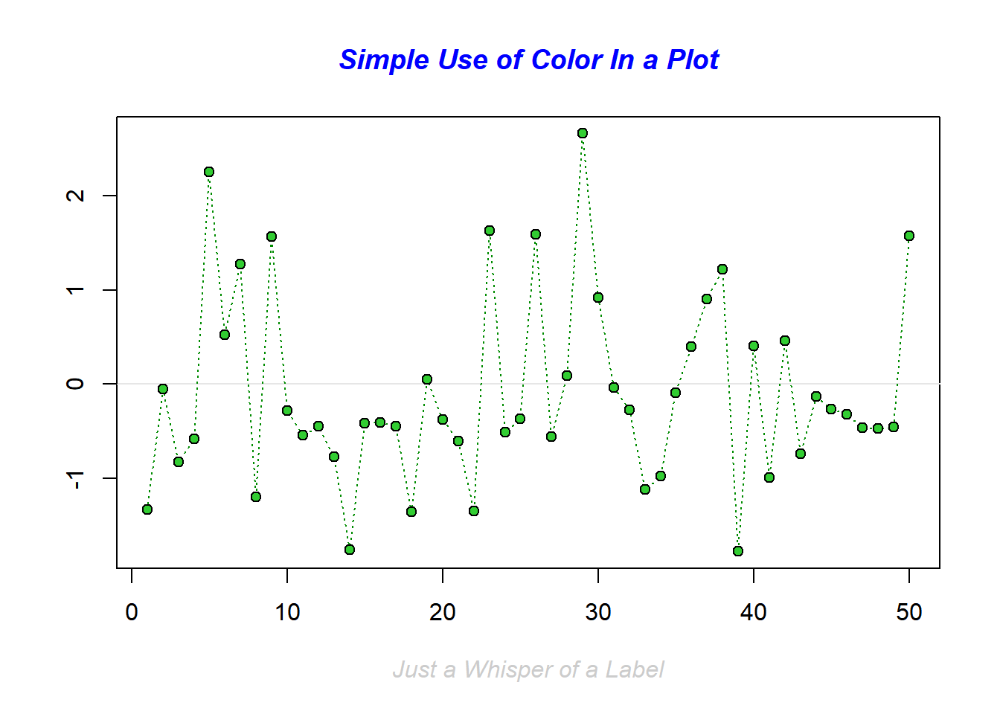
##
## > abline(h = 0, col = gray(.90))
##
## > lines(x, col = "green4", lty = "dotted")
##
## > points(x, bg = "limegreen", pch = 21)
##
## > title(main = "Simple Use of Color In a Plot",
## + xlab = "Just a Whisper of a Label",
## + col.main = "blue", col.lab = gray(.8),
## + cex.main = 1.2, cex.lab = 1.0, font.main = 4, font.lab = 3)
##
## > ## A little color wheel. This code just plots equally spaced hues in
## > ## a pie chart. If you have a cheap SVGA monitor (like me) you will
## > ## probably find that numerically equispaced does not mean visually
## > ## equispaced. On my display at home, these colors tend to cluster at
## > ## the RGB primaries. On the other hand on the SGI Indy at work the
## > ## effect is near perfect.
## >
## > par(bg = "gray")
##
## > pie(rep(1,24), col = rainbow(24), radius = 0.9)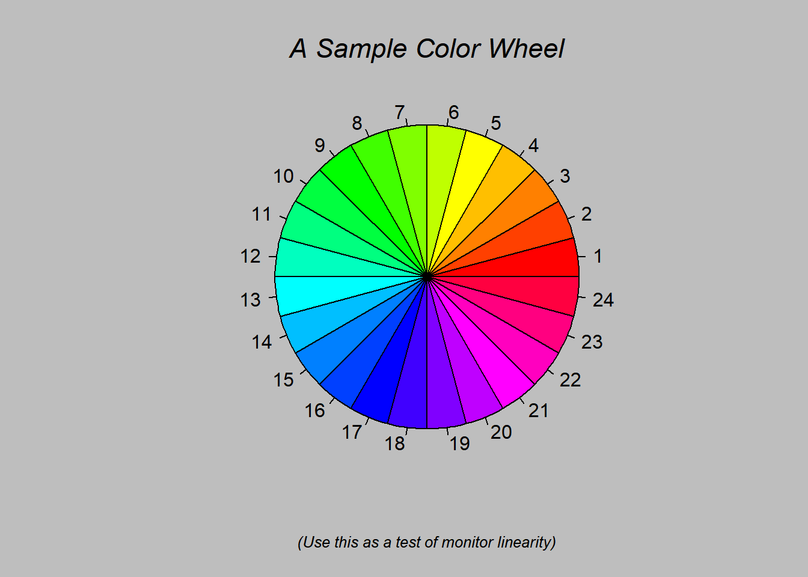
##
## > title(main = "A Sample Color Wheel", cex.main = 1.4, font.main = 3)
##
## > title(xlab = "(Use this as a test of monitor linearity)",
## + cex.lab = 0.8, font.lab = 3)
##
## > ## We have already confessed to having these. This is just showing off X11
## > ## color names (and the example (from the postscript manual) is pretty "cute".
## >
## > pie.sales <- c(0.12, 0.3, 0.26, 0.16, 0.04, 0.12)
##
## > names(pie.sales) <- c("Blueberry", "Cherry",
## + "Apple", "Boston Cream", "Other", "Vanilla Cream")
##
## > pie(pie.sales,
## + col = c("purple","violetred1","green3","cornsilk","cyan","white"))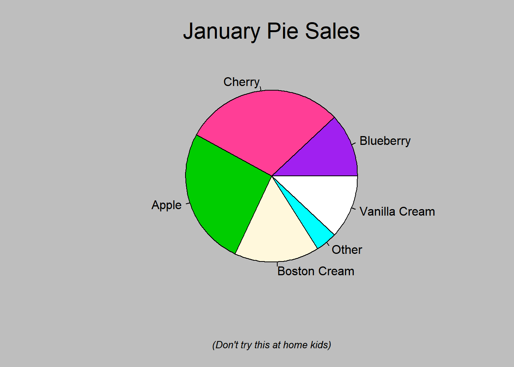
##
## > title(main = "January Pie Sales", cex.main = 1.8, font.main = 1)
##
## > title(xlab = "(Don't try this at home kids)", cex.lab = 0.8, font.lab = 3)
##
## > ## Boxplots: I couldn't resist the capability for filling the "box".
## > ## The use of color seems like a useful addition, it focuses attention
## > ## on the central bulk of the data.
## >
## > par(bg="cornsilk")
##
## > n <- 10
##
## > g <- gl(n, 100, n*100)
##
## > x <- rnorm(n*100) + sqrt(as.numeric(g))
##
## > boxplot(split(x,g), col="lavender", notch=TRUE)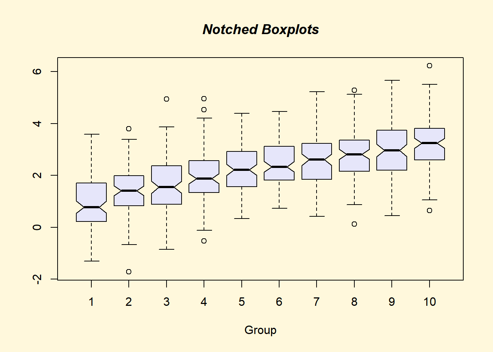
##
## > title(main="Notched Boxplots", xlab="Group", font.main=4, font.lab=1)
##
## > ## An example showing how to fill between curves.
## >
## > par(bg="white")
##
## > n <- 100
##
## > x <- c(0,cumsum(rnorm(n)))
##
## > y <- c(0,cumsum(rnorm(n)))
##
## > xx <- c(0:n, n:0)
##
## > yy <- c(x, rev(y))
##
## > plot(xx, yy, type="n", xlab="Time", ylab="Distance")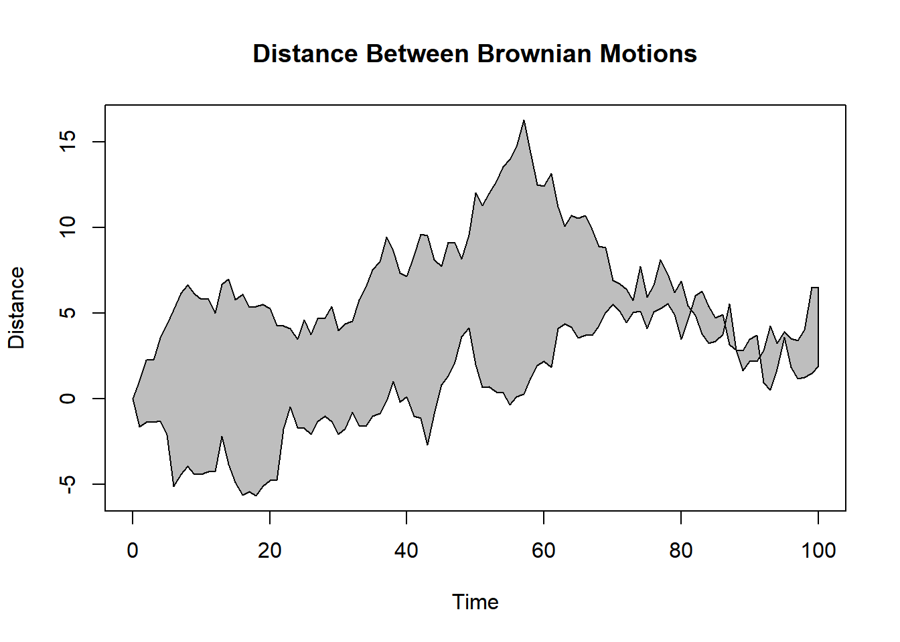
##
## > polygon(xx, yy, col="gray")
##
## > title("Distance Between Brownian Motions")
##
## > ## Colored plot margins, axis labels and titles. You do need to be
## > ## careful with these kinds of effects. It's easy to go completely
## > ## over the top and you can end up with your lunch all over the keyboard.
## > ## On the other hand, my market research clients love it.
## >
## > x <- c(0.00, 0.40, 0.86, 0.85, 0.69, 0.48, 0.54, 1.09, 1.11, 1.73, 2.05, 2.02)
##
## > par(bg="lightgray")
##
## > plot(x, type="n", axes=FALSE, ann=FALSE)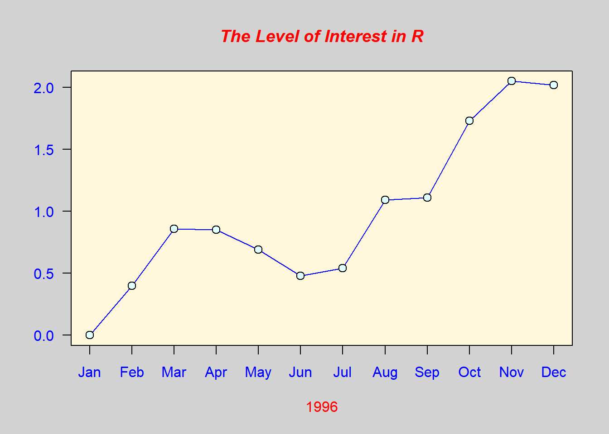
##
## > usr <- par("usr")
##
## > rect(usr[1], usr[3], usr[2], usr[4], col="cornsilk", border="black")
##
## > lines(x, col="blue")
##
## > points(x, pch=21, bg="lightcyan", cex=1.25)
##
## > axis(2, col.axis="blue", las=1)
##
## > axis(1, at=1:12, lab=month.abb, col.axis="blue")
##
## > box()
##
## > title(main= "The Level of Interest in R", font.main=4, col.main="red")
##
## > title(xlab= "1996", col.lab="red")
##
## > ## A filled histogram, showing how to change the font used for the
## > ## main title without changing the other annotation.
## >
## > par(bg="cornsilk")
##
## > x <- rnorm(1000)
##
## > hist(x, xlim=range(-4, 4, x), col="lavender", main="")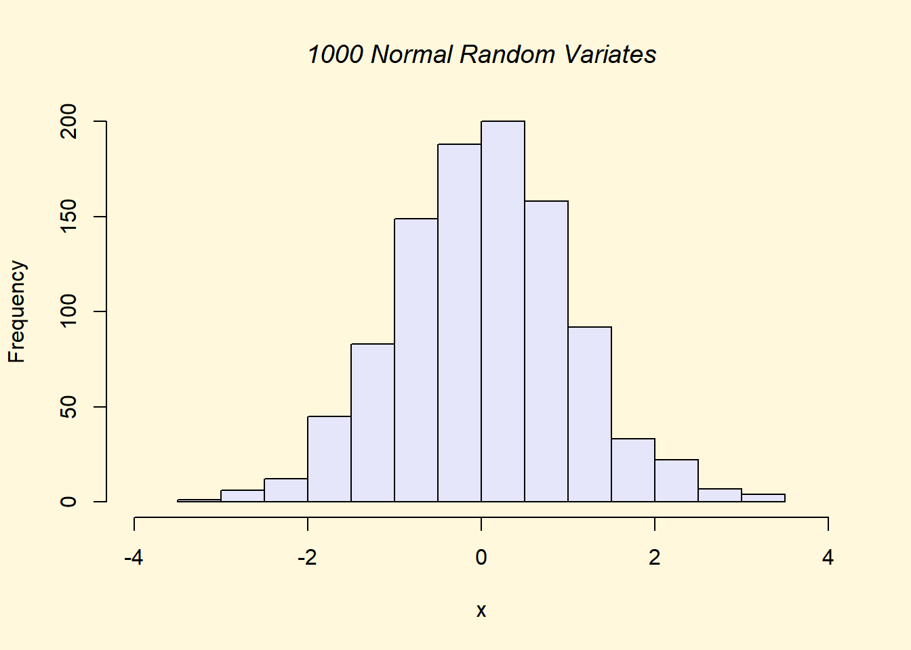
##
## > title(main="1000 Normal Random Variates", font.main=3)
##
## > ## A scatterplot matrix
## > ## The good old Iris data (yet again)
## >
## > pairs(iris[1:4], main="Edgar Anderson's Iris Data", font.main=4, pch=19)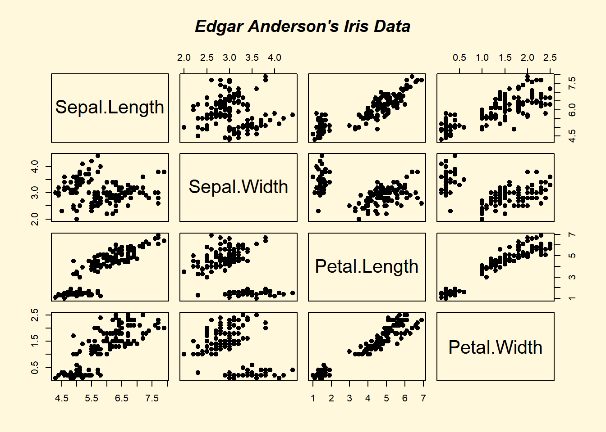
##
## > pairs(iris[1:4], main="Edgar Anderson's Iris Data", pch=21,
## + bg = c("red", "green3", "blue")[unclass(iris$Species)])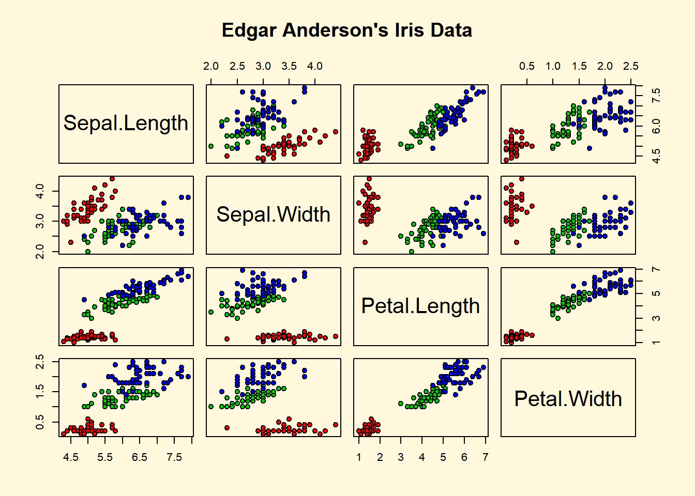
##
## > ## Contour plotting
## > ## This produces a topographic map of one of Auckland's many volcanic "peaks".
## >
## > x <- 10*1:nrow(volcano)
##
## > y <- 10*1:ncol(volcano)
##
## > lev <- pretty(range(volcano), 10)
##
## > par(bg = "lightcyan")
##
## > pin <- par("pin")
##
## > xdelta <- diff(range(x))
##
## > ydelta <- diff(range(y))
##
## > xscale <- pin[1]/xdelta
##
## > yscale <- pin[2]/ydelta
##
## > scale <- min(xscale, yscale)
##
## > xadd <- 0.5*(pin[1]/scale - xdelta)
##
## > yadd <- 0.5*(pin[2]/scale - ydelta)
##
## > plot(numeric(0), numeric(0),
## + xlim = range(x)+c(-1,1)*xadd, ylim = range(y)+c(-1,1)*yadd,
## + type = "n", ann = FALSE)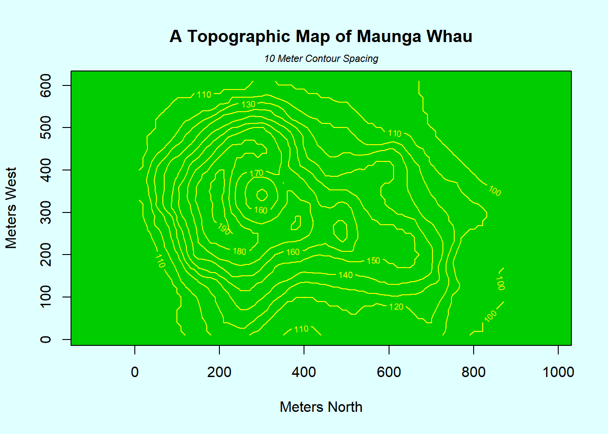
##
## > usr <- par("usr")
##
## > rect(usr[1], usr[3], usr[2], usr[4], col="green3")
##
## > contour(x, y, volcano, levels = lev, col="yellow", lty="solid", add=TRUE)
##
## > box()
##
## > title("A Topographic Map of Maunga Whau", font= 4)
##
## > title(xlab = "Meters North", ylab = "Meters West", font= 3)
##
## > mtext("10 Meter Contour Spacing", side=3, line=0.35, outer=FALSE,
## + at = mean(par("usr")[1:2]), cex=0.7, font=3)
##
## > ## Conditioning plots
## >
## > par(bg="cornsilk")
##
## > coplot(lat ~ long | depth, data = quakes, pch = 21, bg = "green3")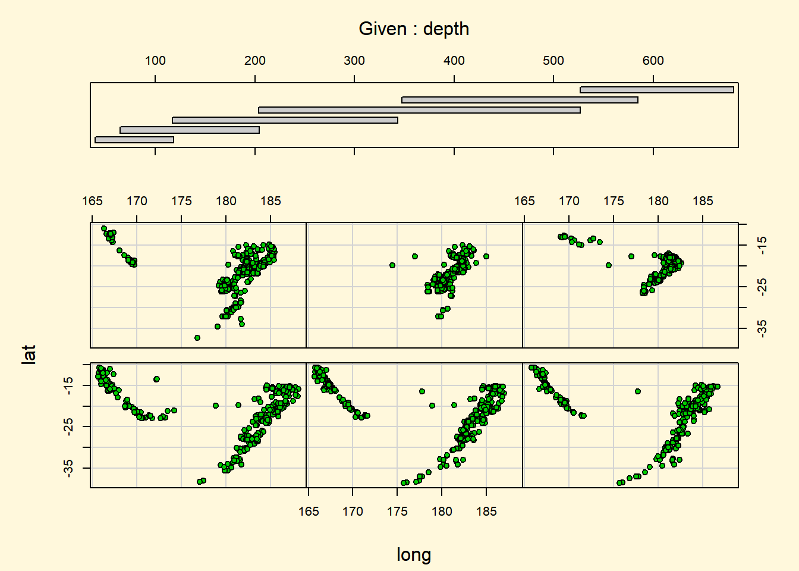
##
## > par(opar)复数运算和求函数极值
(2+4i)^-3.5+(2i+4.5)*(-1.7-2.3i)/((2.6-7i)*(-4+5.1i)) #复数运算
## [1] -0.2790593-0.091246i
#下面构造一个10维复向量，实部和虚部均为10个标准正态样本点：
(Z <- complex(real = rnorm(10), imaginary = rnorm(10)))
## [1] 1.0496171+0.1844224i 0.2903237+0.4030923i 1.2421262+0.8944587i
## [4] -0.6850857-0.5303014i -0.6677681-0.1708288i 0.9409138+1.9139498i
## [7] 0.9953313+0.0000754i 1.0210044-0.4605468i 0.7925958-0.7146372i
## [10] -1.3772293-1.8384693i
complex(re = rnorm(3), im = rnorm(3)) #3维复向量
## [1] 0.1046207+1.2829697i -0.8085439+1.0202919i -0.3638606-0.5302771i
Re(Z) #实部
## [1] 1.0496171 0.2903237 1.2421262 -0.6850857 -0.6677681 0.9409138
## [7] 0.9953313 1.0210044 0.7925958 -1.3772293
Im(Z) #虚部
## [1] 0.1844224002 0.4030922661 0.8944587436 -0.5303014446 -0.1708288145
## [6] 1.9139497514 0.0000754026 -0.4605467509 -0.7146371890 -1.8384693040
Mod(Z) #模
## [1] 1.0656959 0.4967608 1.5306646 0.8663498 0.6892726 2.1327265 0.9953313
## [8] 1.1200684 1.0671994 2.2971134
Arg(Z) #辐角
## [1] 1.739291e-01 9.466143e-01 6.240908e-01 -2.482866e+00 -2.891143e+00
## [6] 1.113885e+00 7.575628e-05 -4.237453e-01 -7.337212e-01 -2.213732e+00
choose(3,2) #组合
## [1] 3
factorial(6) #6！
## [1] 720
#解方程
f <- function(x)
x^3-2*x-1
uniroot(f, c(0,2)) #迭代求根
## $root
## [1] 1.618018
##
## $f.root
## [1] -9.17404e-05
##
## $iter
## [1] 6
##
## $init.it
## [1] NA
##
## $estim.prec
## [1] 6.103516e-05
#如果知道根为极值
f <- function(x)
x^2+2*x+1 #定义一个二次函数
optimize(f, c(-2,2)) #在区间(-2,2)内求极值
## $minimum
## [1] -1
##
## $objective
## [1] 0字符向量和因子向量
a <- factor(letters[1:10]) #letters:小写字母向量， LETTERS:大写
a
## [1] a b c d e f g h i j
## Levels: a b c d e f g h i j
a[3] <- "w" #不行！会给出警告
a <- as.factor(a) #转换一下
a[3] <- "w" #可以了
a
## [1] a b <NA> d e f g h i j
## Levels: a b c d e f g h i j
factor(a)
## [1] a b <NA> d e f g h i j
## Levels: a b d e f g h i j
#定性变量的水平
levels(factor(a))
## [1] "a" "b" "d" "e" "f" "g" "h" "i" "j"
sex <- sample(0:1, 10, r = T)
sex <- factor(sex)
levels(sex)
## [1] "0" "1"
#改变因子的水平
levels(sex) = c("Male", "Female")
levels(sex)
## [1] "Male" "Female"
#确定水平次序
sex <- ordered(sex, c("Female", "Male"))
sex
## [1] Female Male Male Male Male Male Female Male Male Male
## Levels: Female < Male
levels(sex)
## [1] "Female" "Male"序列等
#从-1到100等间隔的20个数组成的序列
(Z <- seq(-1, 10, length = 20) )
## [1] -1.0000000 -0.4210526 0.1578947 0.7368421 1.3157895 1.8947368
## [7] 2.4736842 3.0526316 3.6315789 4.2105263 4.7894737 5.3684211
## [13] 5.9473684 6.5263158 7.1052632 7.6842105 8.2631579 8.8421053
## [19] 9.4210526 10.0000000
Z <- seq(-1, 10, len = 20) #和上面写法等价
(Z <- seq(10, -1, -0.5)) #10到-1间隔为-0.5的序列
## [1] 10.0 9.5 9.0 8.5 8.0 7.5 7.0 6.5 6.0 5.5 5.0 4.5 4.0 3.5 3.0
## [16] 2.5 2.0 1.5 1.0 0.5 0.0 -0.5 -1.0
(X <- rep(1:3, 3)) #三次重复1:3
## [1] 1 2 3 1 2 3 1 2 3
(X <- rep(3:5, 1:3))
## [1] 3 4 4 5 5 5
X <- rep(c(1,10), c(4,5))
X
## [1] 1 1 1 1 10 10 10 10 10
W <- c(1,3,X,Z) #把数据(包括向量)组合(combine)成一个向量
W[3]
## [1] 1
(X <- rep(0, 10))
## [1] 0 0 0 0 0 0 0 0 0 0
(Z <- 1:3)
## [1] 1 2 3
(X + Z) #向量加法(如果长度不同，R给出警告和结果)
## [1] 1 2 3 1 2 3 1 2 3 1
(X * Z) #向量乘法
## [1] 0 0 0 0 0 0 0 0 0 0
rev(Z) #颠倒次序
## [1] 3 2 1
Z <- c("no cat", "has", "nine", "tails") #字符向量
Z[1] == "no cat" #双等号为逻辑等式
## [1] TRUE
Z <- 1:5
Z[7] <- 8
Z #NA为缺失值(not available)
## [1] 1 2 3 4 5 NA 8
Z <- NULL
Z[c(1,3,5)] <- 1:3
Z
## [1] 1 NA 2 NA 3
rnorm(10)[c(2,5)]
## [1] -1.6936073 0.1201104
(Z[-c(1,3)]) #去掉第1、3元素
## [1] NA NA 3
(Z <- sample(1:100, 10))
## [1] 16 91 21 77 35 69 47 99 71 27
which(Z==max(Z)) #给出最大值的下标
## [1] 8矩阵
(X <- sample(1:100, 12)) #抽样
## [1] 47 71 29 99 38 6 12 65 33 36 50 63
#逻辑符号的应用
all(X > 0)
## [1] TRUE
all(X != 0)
## [1] TRUE
any(X > 0)
## [1] TRUE
(1:10)[X>0]
## [1] 1 2 3 4 5 6 7 8 9 10 NA NA
diff(X) #差分
## [1] 24 -42 70 -61 -32 6 53 -32 3 14 13
diff(X, lag = 2) #差分
## [1] -18 28 9 -93 -26 59 21 -29 17 27
(X <- matrix(1:20, 4, 5)) #矩阵的构造
## [,1] [,2] [,3] [,4] [,5]
## [1,] 1 5 9 13 17
## [2,] 2 6 10 14 18
## [3,] 3 7 11 15 19
## [4,] 4 8 12 16 20
(X <- matrix(1:20, 4, 5)) #矩阵的构造, 按行排列
## [,1] [,2] [,3] [,4] [,5]
## [1,] 1 5 9 13 17
## [2,] 2 6 10 14 18
## [3,] 3 7 11 15 19
## [4,] 4 8 12 16 20
t(X) #矩阵转置
## [,1] [,2] [,3] [,4]
## [1,] 1 2 3 4
## [2,] 5 6 7 8
## [3,] 9 10 11 12
## [4,] 13 14 15 16
## [5,] 17 18 19 20
(X <- matrix(sample(1:100, 20), 4, 5))
## [,1] [,2] [,3] [,4] [,5]
## [1,] 1 99 7 21 65
## [2,] 46 38 91 60 70
## [3,] 14 10 80 32 28
## [4,] 81 37 35 20 24
2*X
## [,1] [,2] [,3] [,4] [,5]
## [1,] 2 198 14 42 130
## [2,] 92 76 182 120 140
## [3,] 28 20 160 64 56
## [4,] 162 74 70 40 48
X+5
## [,1] [,2] [,3] [,4] [,5]
## [1,] 6 104 12 26 70
## [2,] 51 43 96 65 75
## [3,] 19 15 85 37 33
## [4,] 86 42 40 25 29
(Y <- matrix(sample(1:100, 20), 5, 4))
## [,1] [,2] [,3] [,4]
## [1,] 9 4 42 53
## [2,] 45 77 84 11
## [3,] 37 12 49 39
## [4,] 47 34 30 25
## [5,] 20 2 74 14
X + t(Y) #矩阵之间相加
## [,1] [,2] [,3] [,4] [,5]
## [1,] 10 144 44 68 85
## [2,] 50 115 103 94 72
## [3,] 56 94 129 62 102
## [4,] 134 48 74 45 38
(Z <- X %*% Y) #矩阵乘法
## [,1] [,2] [,3] [,4]
## [1,] 7010 8555 14141 2850
## [2,] 9711 6382 16563 8885
## [3,] 5600 2930 8380 5164
## [4,] 5109 4321 10601 6901
Z1 <- solve(Z) #用solve(a,b)可以解ax=b
Z1 %*% Z #应该是单位向量，但浮点运算不可能得到干净的0
## [,1] [,2] [,3] [,4]
## [1,] 1.000000e+00 1.665335e-15 6.661338e-15 3.996803e-15
## [2,] 2.220446e-15 1.000000e+00 4.440892e-15 4.440892e-15
## [3,] -1.776357e-15 -2.886580e-15 1.000000e+00 -1.332268e-15
## [4,] 0.000000e+00 4.440892e-16 8.881784e-16 1.000000e+00
round(Z1 %*% Z, 0) #四舍五入
## [,1] [,2] [,3] [,4]
## [1,] 1 0 0 0
## [2,] 0 1 0 0
## [3,] 0 0 1 0
## [4,] 0 0 0 1
b <- solve(Z, 1:4)
b #联立解方程
## [1] 0.002207448 0.005525297 -0.005006431 0.003176426矩阵(续)
#行列数目
nrow(X)
## [1] 4
ncol(X)
## [1] 5
dim(X)
## [1] 4 5
(X <- matrix(rnorm(24), 4, 6))
## [,1] [,2] [,3] [,4] [,5] [,6]
## [1,] -0.6903121 0.594365061 0.1882529 1.8722902 -0.2190501 2.5567747
## [2,] 0.1426123 -0.915443157 -0.3302688 0.2123343 1.2989344 -0.9803302
## [3,] 2.3953355 0.002704707 0.6552713 1.2943698 0.1667661 0.4778879
## [4,] -0.1275299 0.776622965 -0.8263119 1.2411447 0.4227844 0.2003272
X[c(2,1),] #第2和第1行
## [,1] [,2] [,3] [,4] [,5] [,6]
## [1,] 0.1426123 -0.9154432 -0.3302688 0.2123343 1.2989344 -0.9803302
## [2,] -0.6903121 0.5943651 0.1882529 1.8722902 -0.2190501 2.5567747
X[,c(1,3)] #第1和第3列
## [,1] [,2]
## [1,] -0.6903121 0.1882529
## [2,] 0.1426123 -0.3302688
## [3,] 2.3953355 0.6552713
## [4,] -0.1275299 -0.8263119
X[2,1] #第[2,1]元素
## [1] 0.1426123
X[X[,1]>0,1] #第1列大于0的元素
## [1] 0.1426123 2.3953355
sum(X[,1]>0) #第1列大于0的元素个数
## [1] 2
sum(X[,1]<=0) #第1列不大于0的元素个数
## [1] 2
X[,-c(1,3)] #没有第1、3列的X
## [,1] [,2] [,3] [,4]
## [1,] 0.594365061 1.8722902 -0.2190501 2.5567747
## [2,] -0.915443157 0.2123343 1.2989344 -0.9803302
## [3,] 0.002704707 1.2943698 0.1667661 0.4778879
## [4,] 0.776622965 1.2411447 0.4227844 0.2003272
diag(X) #X的对角线元素
## [1] -0.6903121 -0.9154432 0.6552713 1.2411447
diag(1:5) #以1:5为对角线元素，其他元素为0的对角线矩阵
## [,1] [,2] [,3] [,4] [,5]
## [1,] 1 0 0 0 0
## [2,] 0 2 0 0 0
## [3,] 0 0 3 0 0
## [4,] 0 0 0 4 0
## [5,] 0 0 0 0 5
diag(5) #5维单位矩阵
## [,1] [,2] [,3] [,4] [,5]
## [1,] 1 0 0 0 0
## [2,] 0 1 0 0 0
## [3,] 0 0 1 0 0
## [4,] 0 0 0 1 0
## [5,] 0 0 0 0 1
X[-2, -c(1,3)] #没有第2行，第1、3列的X
## [,1] [,2] [,3] [,4]
## [1,] 0.594365061 1.872290 -0.2190501 2.5567747
## [2,] 0.002704707 1.294370 0.1667661 0.4778879
## [3,] 0.776622965 1.241145 0.4227844 0.2003272
X[X[,1]>0 & X[,3]<=1, 1] #第1列>0并且第3列<=1的第1列元素
## [1] 0.1426123 2.3953355
X[X[,2]>0 | X[,1]<.51, 1] #第1列<.51或者第2列>0的第1列元素
## [1] -0.6903121 0.1426123 2.3953355 -0.1275299
X[!X[,2]<.51, 1] #第1列中相应于第2列>=.51的元素
## [1] -0.6903121 -0.1275299
apply(X, 1, mean) #对行(第一维)求均值
## [1] 0.71705346 -0.09536019 0.83205587 0.28117290
apply(X, 2, sum) #对列(第二维)求和
## [1] 1.7201057 0.4582496 -0.3130565 4.6201390 1.6694348 2.2546596
(X <- matrix(rnorm(24), 4, 6))
## [,1] [,2] [,3] [,4] [,5] [,6]
## [1,] -0.06675607 -1.2987084 1.2825874 1.6722387 0.5489174 0.06786571
## [2,] 0.24324198 0.1092794 -0.5154929 -0.8735746 1.7396045 1.78288913
## [3,] 1.57319641 -1.1091201 0.4918284 1.9421528 1.3577644 0.45403817
## [4,] 0.40785860 -1.2057419 1.0893740 -0.7254902 -1.8211233 -2.32431560
X1 <- X2 <- X
lower.tri(X1)
## [,1] [,2] [,3] [,4] [,5] [,6]
## [1,] FALSE FALSE FALSE FALSE FALSE FALSE
## [2,] TRUE FALSE FALSE FALSE FALSE FALSE
## [3,] TRUE TRUE FALSE FALSE FALSE FALSE
## [4,] TRUE TRUE TRUE FALSE FALSE FALSE
X1[lower.tri(X1)] <- 0
X1 #得到上三角阵
## [,1] [,2] [,3] [,4] [,5] [,6]
## [1,] -0.06675607 -1.2987084 1.2825874 1.6722387 0.5489174 0.06786571
## [2,] 0.00000000 0.1092794 -0.5154929 -0.8735746 1.7396045 1.78288913
## [3,] 0.00000000 0.0000000 0.4918284 1.9421528 1.3577644 0.45403817
## [4,] 0.00000000 0.0000000 0.0000000 -0.7254902 -1.8211233 -2.32431560
X2[upper.tri(X2)] <- 0
X2
## [,1] [,2] [,3] [,4] [,5] [,6]
## [1,] -0.06675607 0.0000000 0.0000000 0.0000000 0 0
## [2,] 0.24324198 0.1092794 0.0000000 0.0000000 0 0
## [3,] 1.57319641 -1.1091201 0.4918284 0.0000000 0 0
## [4,] 0.40785860 -1.2057419 1.0893740 -0.7254902 0 0高维数组
#用24个服从均匀分布的样本点构造4乘3乘2的三维数组
(X <- array(runif(24), c(4,3,2)))
## , , 1
##
## [,1] [,2] [,3]
## [1,] 0.74153766 0.1332268 0.27365356
## [2,] 0.06922773 0.7526676 0.75157998
## [3,] 0.21327422 0.7208868 0.08222841
## [4,] 0.58430176 0.9955347 0.86257547
##
## , , 2
##
## [,1] [,2] [,3]
## [1,] 0.4761465 0.06642724 0.4095437
## [2,] 0.2058568 0.70209084 0.6055103
## [3,] 0.3929965 0.12949010 0.6723459
## [4,] 0.9663898 0.38497275 0.5219199
is.matrix(X)
## [1] FALSE
dim(X) #得到维数(4,3,2)
## [1] 4 3 2
is.matrix(X[1,,]) #部分三维数组是矩阵
## [1] TRUE
(X <- array(1:24, c(4,3,2)))
## , , 1
##
## [,1] [,2] [,3]
## [1,] 1 5 9
## [2,] 2 6 10
## [3,] 3 7 11
## [4,] 4 8 12
##
## , , 2
##
## [,1] [,2] [,3]
## [1,] 13 17 21
## [2,] 14 18 22
## [3,] 15 19 23
## [4,] 16 20 24
X[c(1,3),,]
## , , 1
##
## [,1] [,2] [,3]
## [1,] 1 5 9
## [2,] 3 7 11
##
## , , 2
##
## [,1] [,2] [,3]
## [1,] 13 17 21
## [2,] 15 19 23
apply(X, 1, mean) #可以对部分维做求均值运算
## [1] 11 12 13 14
apply(X, 1:2, sum) #可以对部分维做求和运算
## [,1] [,2] [,3]
## [1,] 14 22 30
## [2,] 16 24 32
## [3,] 18 26 34
## [4,] 20 28 36
apply(X, c(1,3), prod) #可以对部分维做求乘积运算
## [,1] [,2]
## [1,] 45 4641
## [2,] 120 5544
## [3,] 231 6555
## [4,] 384 7680矩阵与向量之间的运算
(X <- matrix(1:20, 5, 4)) #5乘4矩阵
## [,1] [,2] [,3] [,4]
## [1,] 1 6 11 16
## [2,] 2 7 12 17
## [3,] 3 8 13 18
## [4,] 4 9 14 19
## [5,] 5 10 15 20
sweep(X, 1, 1:5, "*") #把1:5的每个元素乘到每一行
## [,1] [,2] [,3] [,4]
## [1,] 1 6 11 16
## [2,] 4 14 24 34
## [3,] 9 24 39 54
## [4,] 16 36 56 76
## [5,] 25 50 75 100
sweep(X, 2, 1:4, "+") #把1:4的每个元素加到每一列
## [,1] [,2] [,3] [,4]
## [1,] 2 8 14 20
## [2,] 3 9 15 21
## [3,] 4 10 16 22
## [4,] 5 11 17 23
## [5,] 6 12 18 24
X*1:5
## [,1] [,2] [,3] [,4]
## [1,] 1 6 11 16
## [2,] 4 14 24 34
## [3,] 9 24 39 54
## [4,] 16 36 56 76
## [5,] 25 50 75 100
#下面把X标准化，即每一元素减去该列均值，除以该列标准差
(X <- matrix(sample(1:100, 24), 6, 4))
## [,1] [,2] [,3] [,4]
## [1,] 19 3 57 51
## [2,] 40 89 82 32
## [3,] 69 30 48 58
## [4,] 2 27 45 61
## [5,] 49 86 15 72
## [6,] 65 81 55 59
(X1 <- scale(X))
## [,1] [,2] [,3] [,4]
## [1,] -0.82731758 -1.3395728 0.3074232 -0.3366280
## [2,] -0.02545593 0.9799559 1.4602602 -1.7579462
## [3,] 1.08187684 -0.6113486 -0.1075981 0.1870156
## [4,] -1.47644368 -0.6922624 -0.2459386 0.4114342
## [5,] 0.31819907 0.8990421 -1.6293430 1.2343027
## [6,] 0.92914128 0.7641858 0.2151962 0.2618218
## attr(,"scaled:center")
## [1] 40.66667 52.66667 50.33333 55.50000
## attr(,"scaled:scale")
## [1] 26.18906 37.07650 21.68563 13.36787
(X2 <- scale(X, scale = FALSE))
## [,1] [,2] [,3] [,4]
## [1,] -21.6666667 -49.66667 6.666667 -4.5
## [2,] -0.6666667 36.33333 31.666667 -23.5
## [3,] 28.3333333 -22.66667 -2.333333 2.5
## [4,] -38.6666667 -25.66667 -5.333333 5.5
## [5,] 8.3333333 33.33333 -35.333333 16.5
## [6,] 24.3333333 28.33333 4.666667 3.5
## attr(,"scaled:center")
## [1] 40.66667 52.66667 50.33333 55.50000
(X3 <- scale(X, center = FALSE))
## [,1] [,2] [,3] [,4]
## [1,] 0.36767613 0.04374461 0.9620476 0.8192837
## [2,] 0.77405502 1.29775671 1.3839983 0.5140604
## [3,] 1.33524491 0.43744608 0.8101453 0.9317344
## [4,] 0.03870275 0.39370147 0.7595112 0.9799276
## [5,] 0.94821740 1.25401210 0.2531704 1.1566358
## [6,] 1.25783941 1.18110442 0.9282915 0.9477988
## attr(,"scaled:scale")
## [1] 51.67591 68.57988 59.24863 62.24950
round(apply(X1, 2, mean), 14)
## [1] 0 0 0 0
apply(X1, 2, sd)
## [1] 1 1 1 1
round(apply(X2, 2, mean), 14)
## [1] 0 0 0 0
apply(X2, 2, sd)
## [1] 26.18906 37.07650 21.68563 13.36787
round(apply(X3, 2, mean), 14)
## [1] 0.7869559 0.7679609 0.8495274 0.8915735
apply(X3, 2, sd)
## [1] 0.5067943 0.5406323 0.3660107 0.2147467缺失值，数据的合并
head(airquality) #有缺失值(NA)的R自带数据(显示前6行)
## Ozone Solar.R Wind Temp Month Day
## 1 41 190 7.4 67 5 1
## 2 36 118 8.0 72 5 2
## 3 12 149 12.6 74 5 3
## 4 18 313 11.5 62 5 4
## 5 NA NA 14.3 56 5 5
## 6 28 NA 14.9 66 5 6
complete.cases(airquality) #判断每行有没有缺失值
## [1] TRUE TRUE TRUE TRUE FALSE FALSE TRUE TRUE TRUE FALSE FALSE TRUE
## [13] TRUE TRUE TRUE TRUE TRUE TRUE TRUE TRUE TRUE TRUE TRUE TRUE
## [25] FALSE FALSE FALSE TRUE TRUE TRUE TRUE FALSE FALSE FALSE FALSE FALSE
## [37] FALSE TRUE FALSE TRUE TRUE FALSE FALSE TRUE FALSE FALSE TRUE TRUE
## [49] TRUE TRUE TRUE FALSE FALSE FALSE FALSE FALSE FALSE FALSE FALSE FALSE
## [61] FALSE TRUE TRUE TRUE FALSE TRUE TRUE TRUE TRUE TRUE TRUE FALSE
## [73] TRUE TRUE FALSE TRUE TRUE TRUE TRUE TRUE TRUE TRUE FALSE FALSE
## [85] TRUE TRUE TRUE TRUE TRUE TRUE TRUE TRUE TRUE TRUE TRUE FALSE
## [97] FALSE FALSE TRUE TRUE TRUE FALSE FALSE TRUE TRUE TRUE FALSE TRUE
## [109] TRUE TRUE TRUE TRUE TRUE TRUE FALSE TRUE TRUE TRUE FALSE TRUE
## [121] TRUE TRUE TRUE TRUE TRUE TRUE TRUE TRUE TRUE TRUE TRUE TRUE
## [133] TRUE TRUE TRUE TRUE TRUE TRUE TRUE TRUE TRUE TRUE TRUE TRUE
## [145] TRUE TRUE TRUE TRUE TRUE FALSE TRUE TRUE TRUE
which(complete.cases(airquality) == F) #有缺失值的行号
## [1] 5 6 10 11 25 26 27 32 33 34 35 36 37 39 42 43 45 46 52
## [20] 53 54 55 56 57 58 59 60 61 65 72 75 83 84 96 97 98 102 103
## [39] 107 115 119 150
sum(complete.cases(airquality)) #完整观测值的个数
## [1] 111
head(na.omit(airquality)) #删去缺失值的数据(显示前6行)
## Ozone Solar.R Wind Temp Month Day
## 1 41 190 7.4 67 5 1
## 2 36 118 8.0 72 5 2
## 3 12 149 12.6 74 5 3
## 4 18 313 11.5 62 5 4
## 7 23 299 8.6 65 5 7
## 8 19 99 13.8 59 5 8
#附加，横或竖合并数据：append，cbind, rbind
X <- 1:10
X[12] <- 3
(X1 <- append(X, 77, after = 5))
## [1] 1 2 3 4 5 77 6 7 8 9 10 NA 3
cbind(1:5, rnorm(5))
## [,1] [,2]
## [1,] 1 1.12457595
## [2,] 2 0.06073521
## [3,] 3 -0.71389299
## [4,] 4 0.95070305
## [5,] 5 -1.87869262
rbind(1:5, rnorm(5))
## [,1] [,2] [,3] [,4] [,5]
## [1,] 1.0000000 2.0000000 3.000000 4.0000000 5.000000
## [2,] -0.1729418 -0.2830812 1.667194 0.1158476 -1.773485
(X <- rbind(1:5, runif(5), runif(5), 1:5, 7:11))
## [,1] [,2] [,3] [,4] [,5]
## [1,] 1.0000000 2.0000000 3.000000 4.0000000 5.0000000
## [2,] 0.6720975 0.7062353 0.238977 0.4959569 0.7915186
## [3,] 0.8780203 0.9109981 0.178308 0.2643037 0.2522314
## [4,] 1.0000000 2.0000000 3.000000 4.0000000 5.0000000
## [5,] 7.0000000 8.0000000 9.000000 10.0000000 11.0000000
X[!duplicated(X),]
## [,1] [,2] [,3] [,4] [,5]
## [1,] 1.0000000 2.0000000 3.000000 4.0000000 5.0000000
## [2,] 0.6720975 0.7062353 0.238977 0.4959569 0.7915186
## [3,] 0.8780203 0.9109981 0.178308 0.2643037 0.2522314
## [4,] 7.0000000 8.0000000 9.000000 10.0000000 11.0000000
unique(X)
## [,1] [,2] [,3] [,4] [,5]
## [1,] 1.0000000 2.0000000 3.000000 4.0000000 5.0000000
## [2,] 0.6720975 0.7062353 0.238977 0.4959569 0.7915186
## [3,] 0.8780203 0.9109981 0.178308 0.2643037 0.2522314
## [4,] 7.0000000 8.0000000 9.000000 10.0000000 11.0000000list
#list可以是任何对象（包括list本身）的集合
Z <- list(1:3, Tom <- c(1:2, a <- list("R", letters[1:5]), W = "hi"))
Z[[1]]
## [1] 1 2 3
Z[[2]]
## [[1]]
## [1] 1
##
## [[2]]
## [1] 2
##
## [[3]]
## [1] "R"
##
## [[4]]
## [1] "a" "b" "c" "d" "e"
##
## $W
## [1] "hi"条形图和表
X <- c(3,3,3,4,1,4,2,1,3,2,5,3,1,2,5,2,3,4,2,2,5,3,1,4,2,2,4,3,5,2)
barplot(X) #不合题意的图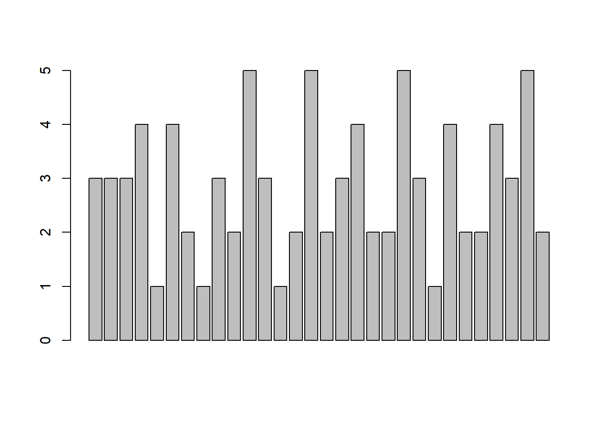
table(X) #制表
## X
## 1 2 3 4 5
## 4 9 8 5 4
barplot(table(X)) #正确的图
barplot(table(X)/length(X)) #比例图(和上图形状一样)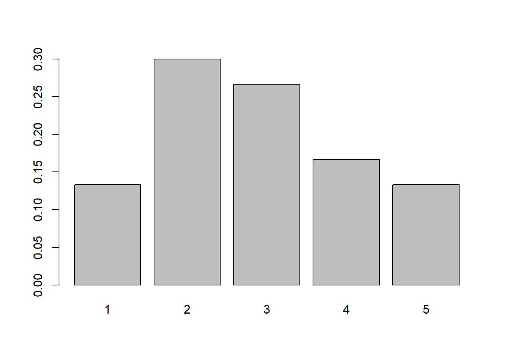
table(X)/length(X)
## X
## 1 2 3 4 5
## 0.1333333 0.3000000 0.2666667 0.1666667 0.1333333形成表格
library(MASS)
head(quine) #MASS所带数据，显示前6行
## Eth Sex Age Lrn Days
## 1 A M F0 SL 2
## 2 A M F0 SL 11
## 3 A M F0 SL 14
## 4 A M F0 AL 5
## 5 A M F0 AL 5
## 6 A M F0 AL 13
attach(quine)
#下面的语句产生从该数据得到的各种表格
table(Age)
## Age
## F0 F1 F2 F3
## 27 46 40 33
table(Sex, Age)
## Age
## Sex F0 F1 F2 F3
## F 10 32 19 19
## M 17 14 21 14
tab <- xtabs(~ Sex + Age, quine)
unclass(tab)
## Age
## Sex F0 F1 F2 F3
## F 10 32 19 19
## M 17 14 21 14
## attr(,"call")
## xtabs(formula = ~Sex + Age, data = quine)
tapply(Days, Age, mean)
## F0 F1 F2 F3
## 14.85185 11.15217 21.05000 19.60606
tapply(Days, list(Sex, Age), mean)
## F0 F1 F2 F3
## F 18.70000 12.96875 18.42105 14.00000
## M 12.58824 7.00000 23.42857 27.21429
detach(quine) #attach的逆运行如何写函数
#下面这个函数是按照定义(编程简单，但效率不高)求n以内的素数。
ss <- function(n = 100){
Z = 2
for (i in 2:n)
if (any(i%%2:(i-1) == 0) == F)
Z <- c(Z, i)
return(Z)
}
##fix(ss) #用来修改任何函数或编写一个新函数
ss() #计算100以内的素数
## [1] 2 3 5 7 11 13 17 19 23 29 31 37 41 43 47 53 59 61 67 71 73 79 83 89 97
t1 <- Sys.time() #记录时间点
tail(ss(10000)) #计算10000以内的素数(这里只显示后6个)
## [1] 9929 9931 9941 9949 9967 9973
Sys.time() - t1 #计算费了多少时间
## Time difference of 0.386966 secs
system.time(ss(10000)) #计算执行ss(10000)所用时间
## 用户 系统 流逝
## 0.36 0.02 0.37
#函数可以不写return，这时最后一个值为return的值
#为了输出多个值最好使用list输出画图
X <- seq(-3, 3, len = 20)
Y <- dnorm(X) #产生数据
W <- data.frame(X, Y) #合并X,Y成为数据W
par(mfcol = c(2,2)) #准备画四个图的地方
plot(Y ~ X, W, main = "正态密度函数")
plot(Y ~ X, W, type = "l", main = "正态密度函数")
plot(Y ~ X, W, type = "o", main = "正态密度函数")
plot(Y ~ X, W, type = "b", main = "正态密度函数")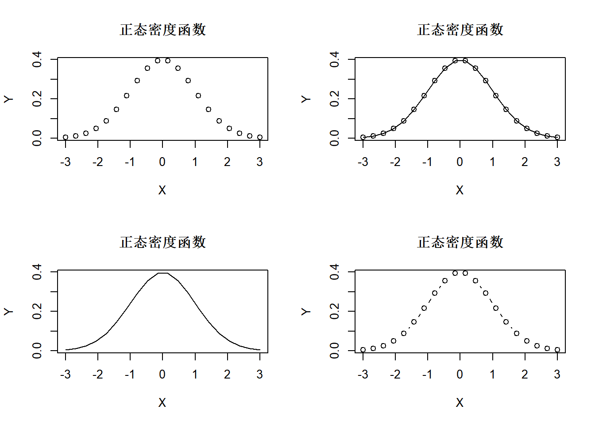
par(mfcol = c(1,1)) #取消par(mfcol = c(2,2))色彩和符号等的调整
plot(1,1, xlim =c(1, 7.5), ylim = c(0, 5), type = "h") #画出框架
#在plot命令后面追加点(如要追加线可用lines函数)：
points(1:7, rep(4.5, 7), cex = seq(1, 4, l = 7), col = 1:7, pch = 0:6)
text(1:7, rep(3.5, 7), labels = paste(0:6, letters[1:7]),
cex = seq(1, 4, l = 7), col = 1:7) #在指定位置加文字
points(1:7, rep(2, 7), pch = (0:6) + 7) #点出符号7到13
text((1:7) + 0.25, rep(2,7), paste((0:6) + 7)) #加符号号码
points(1:7, rep(1, 7), pch = (0:6) + 14) #点出符号14到20
text((1:7) + 0.25, rep(1,7), paste((0:6) + 14)) #加符号号码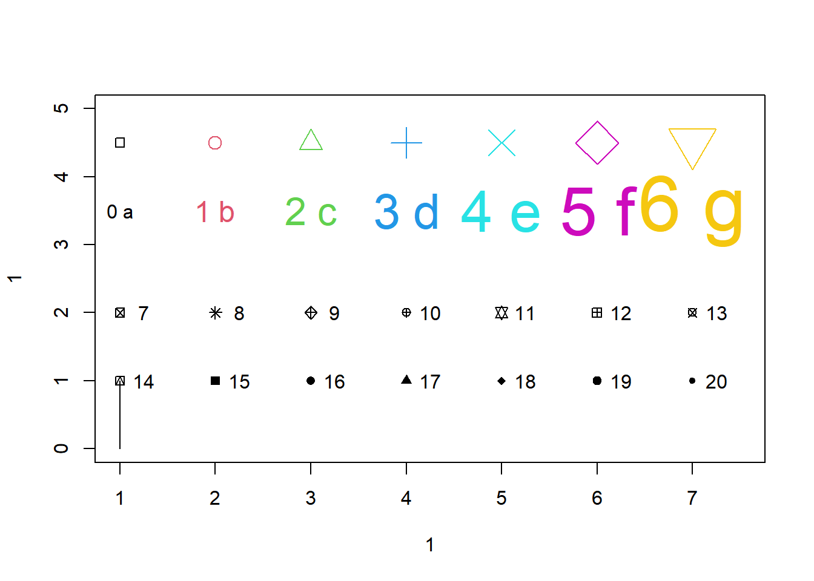
#关于符号形状、大小、颜色以及其他画图选项的说明可以用"?par"来查看以上内容整理自吴喜之《复杂数据统计方法——基于R的应用》